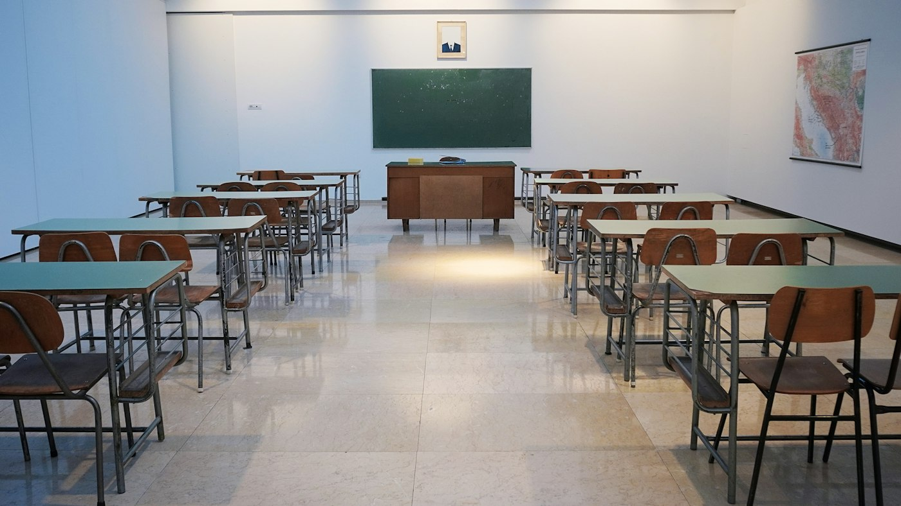
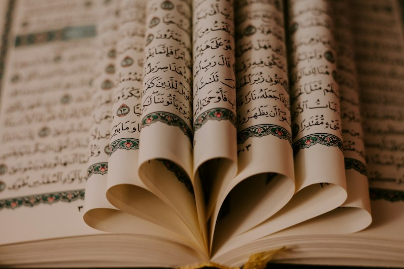

ELEMENTARY LEVEL
Sekolah Dasar (SD) — Full-Day & Online
Fondasi Tahfizh, adab Islami, literasi sains, matematika, dan bahasa Inggris aktif untuk siswa kelas 1–6.

Mafatih Islamic School Jakarta (MISJ) memadukan pendidikan Tahfizh Al-Qur'an, sains modern, literasi bahasa Inggris, dan pembentukan karakter kepemimpinan Islami berstandar internasional.
Di bawah naungan Yayasan Generasi Aman Sentosa (SK Kemenkumham RI No. AHU-0030526.AH.01.04 Tahun 2016), Mafatih Islamic School Jakarta (MISJ) memadukan Tahfizh Qur'an, Sains, Kepemimpinan (Adab), serta literasi Bahasa Indonesia, Arab, dan Inggris melalui jalur Reguler, Subsidi, dan Donatur.
Pengakuan resmi atas mutu kurikulum, tenaga pendidik, sarana prasarana, dan tata kelola sekolah.
Fondasi Tahfizh, adab Islami, literasi sains, matematika, dan bahasa Inggris aktif untuk siswa kelas 1–6.
Program pembelajaran fleksibel berstandar terstruktur dengan pendampingan guru, riset sains, dan penguatan karakter.
Akses cepat seluruh panduan akademik, pembayaran Virtual Account, pengajuan subsidi, hingga e-learning sekolah.
Buku panduan resmi tata tertib, kalender akademik, dan komunikasi orang tua.
Panduan tertulis & tutorial video pembayaran SPP melalui Virtual Account.
Skema pendaftaran jalur Regular, Subsidized, dan Donor untuk pendidikan inklusif.
Portal materi belajar digital, buku impor & buku Mafatih, serta perpustakaan sekolah.

Program pembinaan membaca Al-Qur'an yang interaktif dan menyenangkan untuk memperkuat kecintaan siswa pada Al-Qur'an.

Siswa belajar ilmu hayati dan keanekaragaman fauna secara langsung bersama peneliti dan pendidik di laboratorium alam.
Menampilkan kreativitas literasi siswa dalam Mading mingguan serta evaluasi capaian belajar semester ganjil.
“Alhamdulillah, apa yang kami cari dari sebuah Sekolah Dasar untuk anak kami Ghafi, kami temukan di Mafatih Islamic School Kalibata.”
Orang Tua Ghafi Benzema“Selama hampir 7 tahun berinteraksi dengan Mafatih dan tahun ini anak ke-3 kami insyaAllah masuk kelas 1, alhamdulillah kami sangat bersyukur.”
Orang Tua Fatih, Faza & Faiz“Mafatih Islamic School adalah sekolah yang bisa membentuk karakter anak dengan berakhlakul karimah, mandiri, kreatif, dan menjadi generasi Qur'ani.”
Orang Tua Haneefa & Hilya